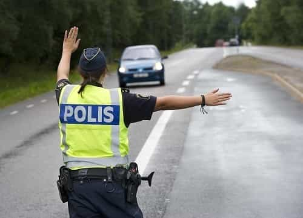

< < < Back
Why Are Swedish Police Protecting Migrants Who Molest Young Girls At Concerts? – Return Of Kings
For years, sexual assaults by groups of men were committed at a festival in Stockholm. But word of this never got out to the public. The reason? The perpetrators were immigrants, many of them “unaccompanied minors” from Afghanistan. Not only did the mainstream media choose to ignore what was going on, but even more outrageously the police kept quiet as well. Exposed documents reveal that the police hide information that might “play into the hands” of the nationalist and conservative party, the Sweden Democrats.
Sexual predators in the crowd
In August last year, there was a music festival in the Swedish capital, called “We are Sthlm.” Many young girls came to see the big star Zara Larsson perform. So did a bunch of immigrant youths as well, but they had something else in mind. During the concert they molested the young girls, touched their private parts and tried getting their hands under the girls’ clothes.
One eyewitness says that in just one night, police and security guards had to intervene against around 90 males, both young and old. Anna, 15 years old, was at the festival and remembers what happened:
Especially at the concerts it was very horrible. Immediately when you went into the crowd they started feeling you up. They surrounded us, one of my friends fell down and then they threw themselves over her immediately. They didn’t care that you said no, or that you had a boyfriend.

As Zara Larsson performed, young girls were being molested in the crowd.
The eyewitness mentioned above, a psychologist at the local police department, turned to Swedish leading newspaper Dagens Nyheter to report what he had seen. He contacted journalist Hanne Kjöller, who he thought would have enough integrity to cover such a sensitive issue as immigrant criminality. But he was wrong. He has now revealed his correspondence with the journalist to Nyheter Idag.
She was very interested and listened until I told her that all the boys and men that were apprehended were unaccompanied [minors] from Afghanistan and Syria. I sensed that she changed the tone [of her voice]. But she also said that she would contact the police.
The journalist was given a phone number to a police officer who was on duty at the festival. He wanted to give his recollection of the events and the systematic sexual assaults. But the journalist didn’t seem interested in hearing his side of the story.
We got in touch and talked briefly, and she said she would call back, which she did not. So I looked for her, she did not call back. I tried to reach her at another time, but I never heard back from her again. I called several times, cannot say exactly how many. It was over a three or four day period.
Journalist Hanne Kjöller. She describes herself as a “liberal feminist”
Several months later, after the sexual assaults in Cologne were exposed, Hanne Kjöller sent a message to the psychologist saying that she wanted to talk to him again. She explained why she didn’t follow up on the story at first, that her editor called it “SD fabrications,” referring to the nationalist party the Sweden Democrats. The psychologist decided to instead turn to alternative news website Nyheter Idag.
The police were in on the cover-up
Mainstream journalists weren’t the only ones who prevented assaults at the festival from being known. The police were keeping quiet about it as well. The sexual molestation of young girls, which went on at “We are Sthlm” both in 2014 and 2015, were never reported to the public.
The festival proceeded calmly, according to a statement released by the police. But internal memos sent to police chiefs and the Stockholm police media centre were very clear about what was happening. One of them states that “the problem of younger men rubbing themselves on young girls in the sea of people has reappeared as in previous years.” The documents also confirm that the perpetrators were immigrants.
These are so-called refugee youths primarily from Afghanistan. Several from the gang were arrested for sexual harassment. The gang was also responsible for several fights during the evening. One complainant had their arm dislocated.

Not one word of these crimes got out to the public. Newspaper Dagens Nyheter has talked to policemen saying that they deliberately avoid reporting crimes when the perpetrators have a foreign background. Police Chief Peter Ågren explains why.
This is a sore point. Sometimes we do not dare to say how things really are because we believe it will play into the hands of the Sweden Democrats. We have to take responsibility for this within the police.
In an internal letter, which has now been exposed, the press officer of the police gives directions on how to write about crimes on the authority’s website. Descriptions like the perpetrator’s ethnicity or skin color are not allowed to be published on the website. The reason for this new policy is also stated in the letter.
Critique is sometimes expressed against the police’s reporting of peoples’ skin color. It is viewed as racist. As the police is not racist and neither should be viewed as such, from now on the instructions below apply.
The police can’t be trusted anymore
What’s new about this scandal is not that the mainstream media are biased, hate the nationalist Sweden Democrats, and don’t want to report on immigrant crimes. We knew that already. The disturbing news here is that the police are in on it as well. They have become politically correct to the point where they can’t do their job right anymore. If they had been open about the assaults at the festival, many girls might have been saved from harm.
While it’s repugnant and shameful, one can explain why the police are covering up immigrant crimes. They have been vilified by the establishment left for many years now. Swedish police officers have the same problem as their American counterparts—every time they’re forced to take action against a non-white perpetrator, people lose their shit and automatically brand them racist.
Being called a racist is one of the worst things that can happen to you in this day and age. For the police, it’s a matter of trust. They need the public on their side to be able to investigate crimes properly and communicate with ordinary citizens. If they are perceived as racist, it will make their work more difficult, especially in suburbs where many immigrants live.
The police have, in an attempt to improve their reputation, chosen the politically correct path. That choice backfired on them. We now know that the police can’t be trusted to enforce the law fairly, and to treat criminals the same without regard for their skin color. The biggest price for that was paid by those girls at the festival, whose innocence was sacrificed on the altar of political correctness.
What do you call a country where the police force has a political agenda?
Read More: Islamists Harass Swedes In Increasingly Immigrant-Filled Swedish Suburbs